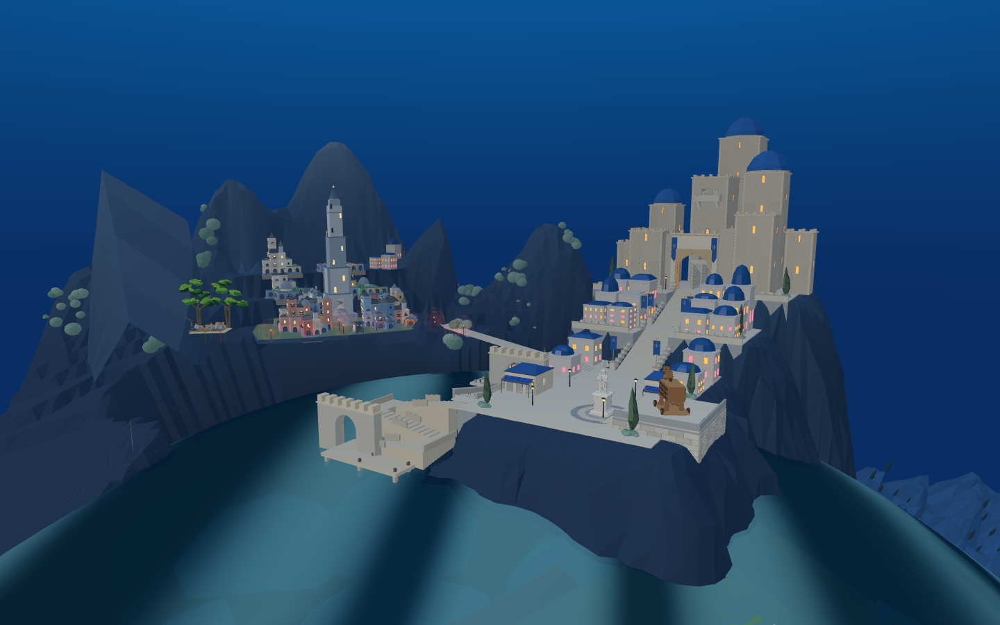
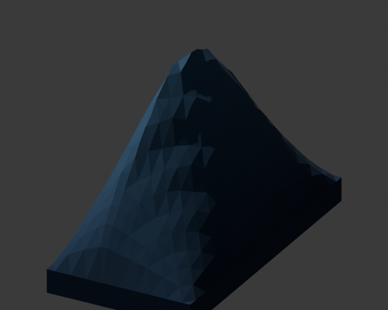
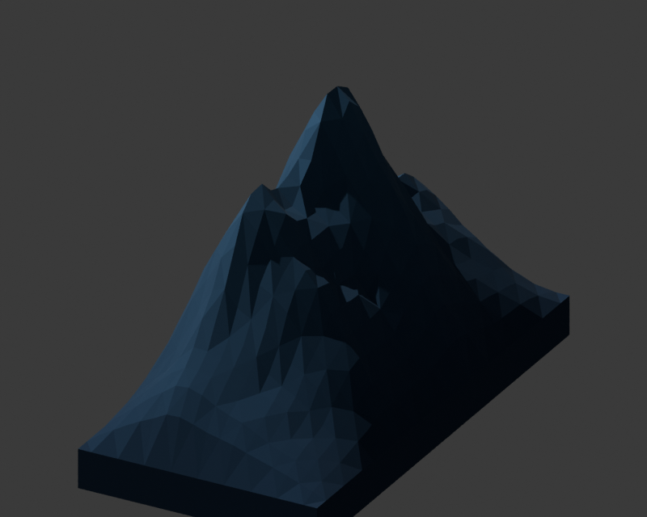
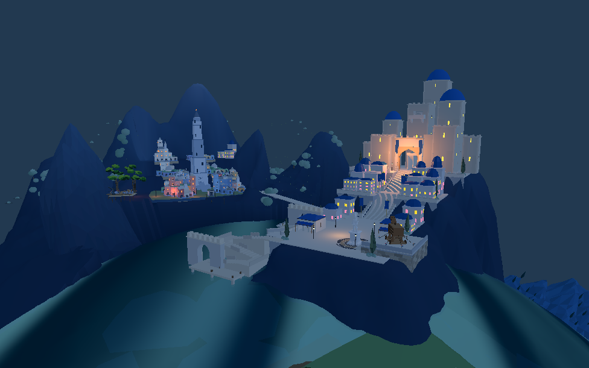
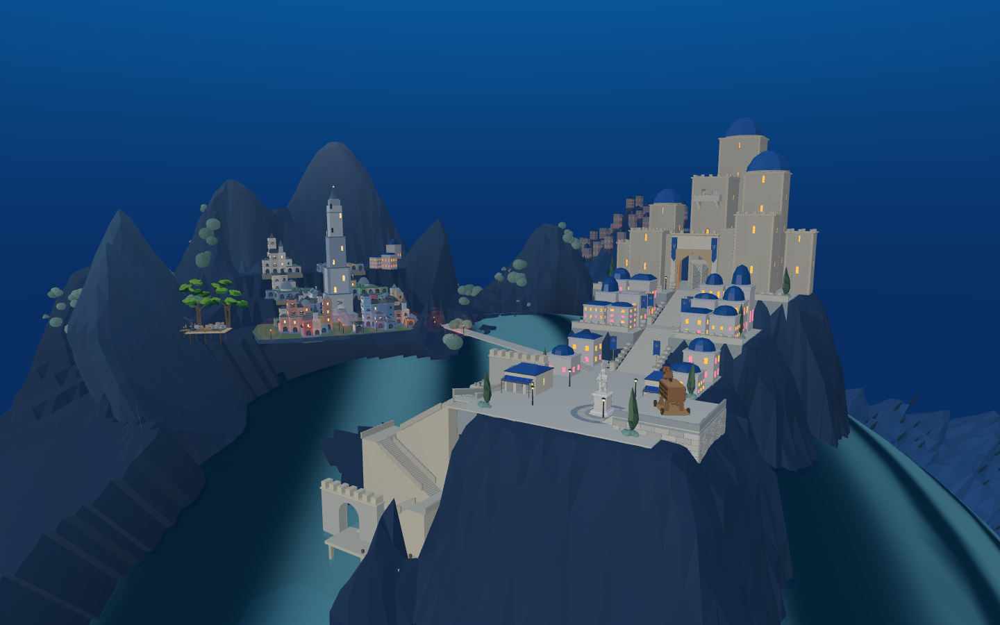

真实 Blender MCP 两轮制作，保留独立评审场景和 .blend 源文件。第一轮闭合原西侧山翼、降低端部；第二轮调整峰脊、岩面和局部层次。最终坡脚按实际球形海面适配。已接入默认 8931 原游戏和同一 Godot 工程。
默认原游戏 · 整体基准调整版 · 两端布局的 Web 检查 · Godot 默认核对 · Godot 调整版核对
本批只修西侧山翼：新旧城完整山势、旧港高差、全场目标图复刻仍未完成。调整版仍是候选，不能按模型已导入就算全场验收。




原黄绿色三角墙已由同模型替换；旧城下方海岸封口的黑面也已修复，保留原岩色和光照。修复的是颜色转换，没有把关闭光照的试验版本合入。

